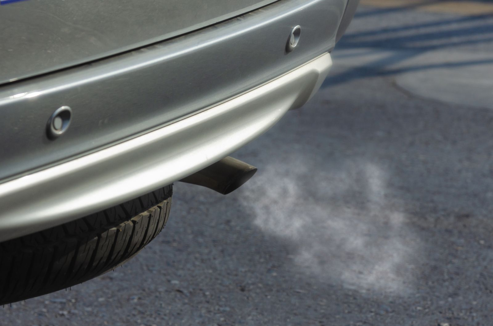

Muffler Delete vs Straight Pipe: What Each Actually Does
A muffler delete removes the muffler and replaces it with pipe, keeping the rest of the factory exhaust. A straight pipe replaces the whole system with the shortest, least restrictive path to the exit. They are the two cheapest ways to make a truck louder, they cost different amounts, and they fail
A muffler delete removes one component; a straight pipe replaces the whole system. They cost different amounts and fail in different ways — and the muffler delete can usually be undone with a clamp, while the straight pipe usually needs the factory parts you were told to throw away.
The distinction that gets lost in every sound-clip comparison: one is a change to a part, the other is a change to the system, and only one of them is realistically reversible.
A muffler delete removes the muffler and replaces it with pipe, keeping the rest of the factory exhaust. A straight pipe replaces the whole system with the shortest, least restrictive path to the exit. They are the two cheapest ways to make a truck louder, they cost different amounts, and they fail in different ways — which matters more than which one sounds better in a video.
The distinction that gets lost: a muffler delete is a change to one component. A straight pipe is a change to the system. One can usually be undone with a clamp; the other usually requires the factory parts you were told to throw away.
What each one actually removes
| Muffler delete | Straight pipe | |
|---|---|---|
| What you remove | The muffler only | Resonator, muffler, and the factory bends |
| What you keep | Factory pipe, resonator, catalytic converter, hangers | Catalytic converter and whatever else the shop leaves |
| Typical cost | Lowest of the two — a pipe section and clamps, or a shop’s cut-and-weld | Higher — more pipe, more welding, often a full system |
| Reversible | Yes, if you keep the muffler and don’t cut the factory pipe | Rarely — you will need the factory system back |
| Sound change | Noticeably louder, tone keeps some of the factory character | Much louder, sharper, more rasp |
| Drone risk | Real, because the muffler was doing part of the work | Higher, because nothing is breaking up the resonance |
| Where the law lands | Depends on your measured dB, not on the part | Same rule, and louder usually means closer to the limit |
The cost column is a category statement, not a price. This page does not quote a muffler-delete price because no muffler-delete kit is sold on the listing this guide checked — the pipes are fabricated or bought generically. For the systems that are sold as complete kits, the verified prices are further down.
Why a muffler delete is not the same as a straight pipe
A muffler removes energy from the exhaust pulse by forcing it through chambers and passages. Delete it and you remove that restriction, so more of the pulse reaches the tailpipe as sound.
A straight pipe goes further: it also removes the resonator. The resonator is a different device doing a different job — it is a tuned chamber that cancels a specific frequency band, and on a truck that band is usually right where highway cruise sits. Removing the muffler makes the truck louder at every RPM. Removing the resonator as well makes it louder and adds a narrow, persistent drone at cruise that the muffler alone would not have produced.
That is the whole engineering difference, and it is why “muffler delete” and “straight pipe” produce recordings that sound similar at idle and very different at 70 mph.

The drone question, specifically
Drone is not loudness. It is a low-frequency resonance that peaks in a narrow RPM band — typically 1,800–2,500 rpm on a truck — which is exactly where a half-ton sits in top gear on the highway. A system can be dramatic at wide-open throttle and quiet at cruise, or modest at full throttle and unbearable at 70 mph.
A muffler delete usually keeps enough of the system’s tuning that cruise stays tolerable. A straight pipe on a truck that still has its factory resonator location and chamber volume removed has nothing left to break up that band, and the result is the complaint you see most often after this mod: fine on the test drive, intolerable on the commute.
If you are choosing between the two and you drive the truck on the highway, this is the deciding factor. Drive a truck with the mod at a steady 70 mph before you commit — not a rev in a parking lot.
What the verified listings actually cost
These are complete cat-back systems on the AmericanTrucks 2019–2026 Silverado 1500 exhaust listing, read on 16 November 2026. The listing carries 2,143 exhaust items in total, and the site’s own loudness filter breaks down as Moderate 555, Aggressive 186, Mild 99 — a useful signal that most of this catalog is not, in fact, the loud end.
| System | Fitment | Price | Reviews | Rated loudness |
|---|---|---|---|---|
| C&L Single, polished tip, side exit | 14–18 5.3L | $389.99 | 269 | Moderate |
| C&L Dual, polished tips, side exit | 14–18 5.3L | $674.99 | 344 | Aggressive |
| C&L Dual, polished tips, side exit | 07–13 5.3L | $744.99 | 344 | Aggressive |
| Dual exhaust, polished tips, rear exit | 14–18 5.3L | $429.99 | 40 | Moderate |
| Flowmaster Outlaw Dual, side/rear exit | 14–18 5.3L | $1,149.95 | 409 | Aggressive |
| AWE 0FG Dual, quad diamond black tips, rear exit | 19–26 5.3L w/ factory dual | $1,895.00 | 74 | Aggressive |
Two things worth reading off that table. A complete, engineered cat-back starts at $389.99 — which is the number to hold next to whatever a shop quotes you to fabricate a straight pipe. And the loudest-rated systems are not the cheapest: the Flowmaster Outlaw at $1,149.95 and the AWE at $1,895.00 are both rated Aggressive, and both cost several times the C&L single. Loudness is sold as a premium, not a discount.
See the C&L cat-back → $389.99, 269 reviews, checked 16 Nov 2026
The part nobody tells you before the cut
Both of these mods are cheap because they are irreversible in practice. A muffler delete means cutting the factory pipe at the muffler and clamping or welding a section in. If you keep the muffler and the cut is clean, a shop can put it back. If the factory pipe was cut short to fit a fabricated section, “putting it back” means buying pipe.
A straight pipe is worse. The factory system you removed is scrap value to you and several hundred dollars to replace, and nobody keeps a 12-foot exhaust assembly in a garage. If you sell the truck, are cited, or simply cannot live with the drone, you are buying a replacement system — which is the $389.99-and-up column above.
That is the real comparison. A muffler delete costs less up front and can often be undone. A straight pipe sounds like the bigger change because it is the bigger change, in both directions.
Does either one add power?
Effectively no, and this guide will not quote a horsepower figure for either. Removing a muffler reduces restriction, but on a factory naturally aspirated engine the muffler is not the bottleneck — the manifolds and the catalytic converters upstream are. A cat-back is where a small, high-rpm gain lives, and even that is not something to buy on a power claim.
If you want a measurable change, the exhaust is not where it is. This site’s tuning guide covers what actually changes output, and the order of operations for supporting hardware.
Is it legal?
Two separate rules, and they are commonly confused.
Federal. 42 U.S.C. § 7522(a)(3)(A) prohibits any person from knowingly removing or rendering inoperative any device or element of design installed on a vehicle in compliance with emissions regulations, after sale to the ultimate purchaser. That is the “tampering” provision. Importantly, subsection (a)(3)(B) also prohibits manufacturing, selling, or installing a part whose principal effect is to bypass or defeat such a device.
State noise law. This is the rule a muffler delete or straight pipe actually collides with. California is the clearest example and worth quoting exactly, because the number is real:
Cal. Veh. Code § 27151(a): “A person shall not modify the exhaust system of a motor vehicle in a manner which will amplify or increase the noise emitted by the motor of the vehicle so that the vehicle is not in compliance with the provisions of Section 27150 or exceeds the noise limits established for the type of vehicle…”
And the safe harbor, in subsection (b): for vehicles under 6,000 pounds GVWR, a sound level of 95 dB(A) or less, tested per the current SAE standard, complies. The statute also states expressly that “nonoriginal exhaust equipment” counts as part of the exhaust system — so “it’s an aftermarket part” is not a defense.
The practical reading: the legal question is not whether you deleted a muffler. It is whether your truck, as modified, measures under your jurisdiction’s limit. That is why the same mod is fine in one state and a citation in another, and why no article can tell you whether yours passes. Get it measured if it matters where you live.
One more point that applies everywhere: neither mod touches the catalytic converter, and neither should. Removing a converter is a separate and much more serious violation under the federal provision above.
Which one to pick
Muffler delete if you want the truck noticeably louder, you drive it on the highway, and you want the option to put it back. Keep the muffler, ask the shop to make a clean cut, and drive it at 70 mph before you commit.
Straight pipe only if you have accepted that it is a one-way change, you do not do long highway drives at a steady speed, and you are comfortable with the noise limit where you actually drive.
Neither, if what you want is a better sound rather than simply more of it. The $389.99 C&L cat-back above is an engineered system with a resonator, tuned for a tone rather than volume, and it is reversible. That is the third option almost nobody puts in the comparison, and for a daily-driven truck it is usually the right one.
Frequently asked questions
Is a muffler delete the same as a straight pipe?
No. A muffler delete removes only the muffler, keeping the factory pipe and resonator. A straight pipe replaces the system with the shortest path out, removing the resonator as well. The resonator removal is what adds highway drone.
Is a muffler delete illegal?
It depends on your measured sound level, not on the part. Federally, 42 U.S.C. § 7522 prohibits tampering with emissions devices. Separately, states set noise limits — California’s is 95 dB(A) for vehicles under 6,000 lbs GVWR, under Cal. Veh. Code § 27151. Neither mod touches the catalytic converter, and neither should.
Does a muffler delete add horsepower?
Not measurably. The muffler is not the restriction on a factory naturally aspirated engine — the manifolds and converters upstream are. This guide does not quote a power figure for either mod.
Will a muffler delete drone on the highway?
It can. Drone is a resonance that peaks around 1,800–2,500 rpm, which is highway cruise in top gear. Keeping the factory resonator reduces it; a straight pipe removes the resonator and makes it worse.
Can a muffler delete be reversed?
Usually yes, if you keep the muffler and the factory pipe is not cut short. A straight pipe effectively cannot be reversed without buying a replacement system, which is why the reversible option is the one to pick if you are unsure.
What does a cat-back cost instead?
$389.99 for the C&L single side-exit system for the 14–18 5.3L, verified on the live listing on 16 November 2026. That is a complete engineered system with a resonator, and it is reversible.
Sources
Prices, review counts, fitment and loudness ratings read from the live AmericanTrucks 2019–2026 Silverado 1500 exhaust listing on 16 November 2026. The catalog and facet counts (2,143 items; Moderate 555, Aggressive 186, Mild 99) come from the same page on the same date.
Statutory text from 42 U.S.C. § 7522 and Cal. Veh. Code § 27151, both read directly on 16 November 2026.
Topics
- Exhaust
- C&L
- Silverado 1500
- 5.3L